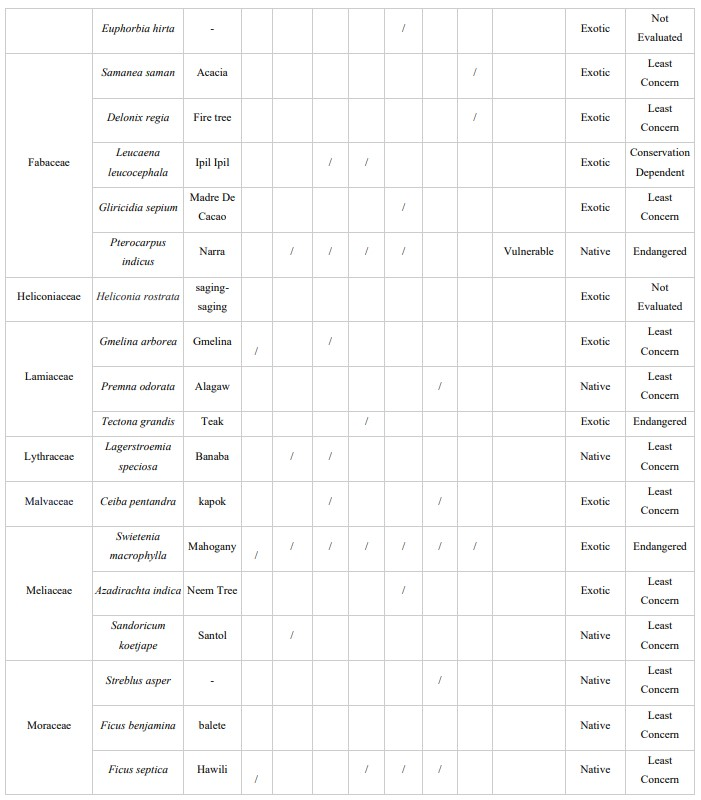

Floral Diversity and Their Importance at Bacolod City National High School, Negros Occidental, Philippines
| Author | Rose Marie U. Getida, Dwynn Leo Barranco, Jonna Mae D. Chua, Jewel E. Jamera, Athena Keziah M. De Leon, Phillip Raymund R. De Oca, Christian Casio |
|---|---|
| Volume | 2 |
| Date Published | May 13, 2024 |
| Date Updated | May 16, 2024 |
Abstract
Records on plant diversity are crucial for the Urban Biodiversity Index. Likewise, schools are also required to assess and monitor their plants and trees. Since no data for plant diversity is available and school monitoring is required, this study aimed to assess and index the plant biodiversity and importance in Bacolod City National High School. Seven ten-meter-long transect lines across densely vegetated areas were established within the school. Relative density, relative dominance, and relative frequency values were solved to obtain Species Importance Value. The study documented 51 vascular plant species belonging to 29 plant families. A total of 41.7% were classified as native species where Pterocarpus indicus and Adonidia merrillii were classified as Vulnerable under the DENR DAO 2017-11. Swietenia macrophylla had the highest SIV. For the ground cover diversity, 26 species belonging to eighteen (18) plant families were recorded of which Rivina humilis obtained the highest overall percent cover (18.4%). For the vegetation structure, S. macrophylla recorded the highest Species Importance Value (SIV) with 58.40, indicating that it is the most dominant species on campus, significantly influencing the vegetation and wildlife. For the species diversity index, BCNHS obtained a 2.74 index value indicating that the area is moderately diverse, while its evenness index is 0.78. Based on the results, BCNHS has a moderately diverse vegetation. Hence, the implementation of interventions such as the re-introduction of other native species and the establishment of native species nurseries is encouraged.
Introduction
Accounting for two-thirds of the world's biodiversity, the Philippines is one of the world's 18 mega-biodiverse countries ranking sixth in terms of plant species and is home to 5% of the world's flora (Sarmiento, 2019). The country’s rich plant diversity is an important component of its terrestrial ecosystems. It is pivotal to its stability & contributes to ensuring an abundance of wildlife, habitat, and ecosystem services (Llait, 2024). However, the Philippines is becoming a highly urbanized nation, with an urban growth rate higher than the national growth rate (Philippine Statistics Authority, 2022). Rapid population growth associated with urbanization exerts significant pressure on ecosystem growth and services (Xiao et al., 2020). Bacolod City, according to the Philippine Statistics Authority is one of the most highly urbanized cities in the country (Philippine Statistics Authority, 2023). The remarkable surge in the city’s urban population contributes to the persistent decline of natural resources, habitats, and food sources, making urbanization a constant threat to sustaining plant diversity (De Barros Ruas et al., 2022; English et al., 2022; Gopalan and Radhakrishna, 2022; Wang et al., 2020). The fragmentation of immense portions of natural habitat caused by the construction of roads, housing, and industry is one of the most serious threats to biodiversity (Zucaro et al., 2022). Likewise, the removal of native species from urban areas and their replacement with non-native species significantly alters the composition of urban biological communities (Faeth et al., 2011); as a result, the ecology of cities differs greatly from that of surrounding undeveloped areas (English et al., 2022). To mitigate the threat, the Convention on Biological Diversity created the City Biodiversity Index to keep track of biodiversity conservation and reduce its loss in highly urbanized areas (Chan et al., 2014; Kohsaka et al., 2013). The City Biodiversity Index has already been implemented in a few countries like Japan, Singapore, Portugal, Finland, India, and Canada (Uchiyama and Kohsaka, 2019; Deslauriers et al., 2018; Kohsaka and Okumura, 2014; Kohsaka et al., 2013; Elmqvist et al., 2013). As for the Philippines, it has already been part of discussions in the country’s effort to conserve biodiversity and included as an indicator for the conservation targets and actions of the Philippines Biodiversity Strategy and Action Plan (PBSAP) 2015-2028 and specifically on the Negros Island Biodiversity Strategy and Action Plan (NIBSAP) 2019-2028. Supporting the government strategy, the Department of Education, guided by its core value "Makakalikasan," promotes environmental protection and conservation through its involvement in the National Greening Program (DepEd Order No. 187 Series of 2018). It has two programs working collaboratively, the Gulayan sa Paaralan established under DepEd Memorandum No. 293 s. 2007 and School Inside a Garden (SIGA) launched through DECS Memo No. 77, s. 1995. Both programs not only aim to create nurseries for endemic trees but also strengthen environmental education that will conserve and protect the heavily challenged floral diversity via an inventory of plants and trees within the campus. As a highly urbanized city. Bacolod City aims to achieve actions and targets related to CBI. However, data on multiple components of biodiversity have to be provided, including plant biodiversity data which is still absent in the city. Likewise, since the Department of Education warrants a comprehensive inventory of plants and trees in every school, this research which aims to assess and index the plant biodiversity and importance in Bacolod City National High School is proposed.
This study will provide more information regarding plant diversity within the campus and provide additional insight on the further benefits of native vegetation such as edible plants for humans, forage food for birds and urban wildlife.
Specifically, it aims to:
(I) Assess the flora, conservation status and provide an inventory of the native and exotic species within BCNHS,
(II) Calculate the diversity index of BCNHS, and
(III) Contribute data as part of the urban biodiversity target under NIBSAP and PBSAP and City Biodiversity Index of Bacolod City.
Materials and Methods
Research Site
The study was conducted at Bacolod City National High School (BCNHS), a secondary school under the Department of Education located at Barangay Taculing, Bacolod City, Negros Occidental, Philippines. The campus grounds of BCNHS is one of the vegetated areas within Bacolod City.
Transect-Quadrat Sampling
In order to effectively index the plant diversity in Bacolod City National High School, the modified Transect-Quadrat Method was used to cover most of the campus.Seven transect lines were established across different areas within the school, all of which are vegetated. The length of the transect line depends on the available distance of the research site. Along the transect lines, quadrats were evenly plotted, each with a 10 meters interval.
There are three types of data that were measured for plant diversity. For the upper canopy diversity assessment, these include all species equal to or greater than 10 centimeters or the large woody and mature plant stands inside the 10m x 10m quadrat. Species counts and the diameter at breast-height (DBH) were measured. For the understory diversity assessment, small trees with a diameter at breast height (DBH) of less than 10 cm were counted and measured. This includes poles, saplings, and shrubs within the 5m x 5m nested quadrat inside the 10m x 10m quadrat. Finally, we assessed ground cover diversity by identifying and estimating the percentage cover of grass and other ground cover species within the 1m x 1m nested quadrant.
Data Analysis
All gathered data in the field were tabulated and analyzed. Relative density (RDensity), relative dominance (RDominance) and relative frequency (RFrequency) values for each species were acquired to obtain their Importance Value (IV).

Importance Value = Relative Density + Relative Frequency + Relative Dominance
Endemism and conservation status of each species were determined to further support the ecological importance of the vegetation of the area. The conservation status of each species was based on DENR DAO 2017-11 or the Updated National List of Threatened Plants and their Categories and the IUCN Red List.
Moreover, species richness was measured for the whole of BCNHS using the Shannon-Weiner Diversity Index. This gives an estimate of species richness and distribution within a certain area. The formula is as follows:

where H’ is the species diversity index, s is the number of species, and pi is the proportion of individuals of each species belonging to the ith species of the total number of individuals (Eyasu et al., 2020).
Plant Identification
All plants within the assessment sites were properly documented for proper identification. To identify plant species, spot characters and other noteworthy features were photographed and recorded. Consultation to taxonomists, relevant literatures, plant identification keys and online photograph databases (www.philippineplants.org) were done to further verify the correct identification up to the species level.
Results and Discussion
Floral Composition
On floral assessment, a total of fifty-one (51) vascular plant species belonging to twenty-nine (29) plant families were identified and recorded within the research sites of Bacolod City National High School. The Family Fabaceae was the most well-represented composing of five (5) on both genera and species, followed by Euphorbiaceae with four (4) genera and species, and Meliaceae & Asteraceae with three (3) genera and species.
On the genus level, the genera Ficus (Moraceae) and Dracaena (Asparagaceae) recorded the most species with two (2). Of the forty-eight (48) identified species 58.3% of the recorded species were considered exotic or those species that are unnaturally introduced in the country, while the 41.7% were all classified as of native descent. Sixteen (16) of the exotic species were determined to as planted for ornamental purposes in which few of them (i.e. Samanea saman, S. macrophylla) were probably part of the nationwide reforestation and planting of exotic species as means for the recovery of logged-over dipterocarp forests during the 1960s to 1980s [12].
Two listed species, Pterocarpus indicus (narra) and Adonidia merrillii (niyog-niyog) were recorded within the site which are classified as Vulnerable under the DENR DAO 2017-11. Being the third largest family of flowering plants, the majority of species under Family Fabaceae has the capability to form networks and nodules on roots with nitrogen-fixing bacteria allowing them to alter restrictive conditions and adapt to a wide variety of ecological and climate requirements aiding their success [13], Moreover, the genera Ficus and Dracaena were the most-numbered genera. Ficus species are considered keystone species as they are primary food sources for several mammals and bird species including fruit bats, hornbills, bulbuls and pigeons. With its diverse consumer, Ficus spp. are easily dispersed in which the majority of these species easily adapt to varied ecosystems. With this, several Ficus spp. are also considered as pioneering species supporting degraded and barren areas to recover. As for the Dracaena spp., both were planted and cultivated within the area.




Vegetation Structure
The area structure of the plants was assessed using relative frequency (RFrequency), density (RDensity), and dominance (RDominance) values (Aureo et al., 2020). The relative density values are the number of individuals per species. The relative frequency of plant species refers to the unit area of the sampling area as a whole. Finally, the basal area per species is referred to as relative dominance. The sum of these values was used to calculate the species importance value (SIV) for the entire sampling area. The SIV index was obtained for each species in order to measure and identify which species dominated the entire area in terms of density, occurrence, and basal area [14].


This study found that C. nucifera was the most dominant species at Bacolod City National High School with the highest score (15.46) in RDominance, followed by Samanea saman and S. macrophylla, while M. multiglandulosa, Dracaena sp., L. leucocephala, S. torvum, and T. catappa had the lowest score (0.02). The variance of measures can have a significant impact on the average value. C. nucifera's measure is mostly high since the recorded individuals were of mature sizes, resulting in a high average value. S. macrophylla, on the other hand, differs in measurement, with relatively small and large sizes, affecting its average value.
The relative density refers to the number of individuals per species. S. macrophylla had the highest score (34.60), followed by M. multiglandulosa (6.91) and P. indicus, while S. saman, C. cainito, C. nucifera, D. regia, C. papaya, M. oleifera, A. indica, Nauclea sp., and T. grandis had the lowest score (0.63).
Relative frequency refers to how many times the species occur over the total number of quadrats. S. macrophylla had the highest score (14.29), followed by M. multiglandulosa and P. indicus (7.69), while S. saman, C. cainito, D. regia, D. angustifolia, L. leucocephala, C. papaya, G. sepium, A. indica, C. nucifera, Nauclea sp., P. odorata, L. biflora, S. torvum, T. grandis, and F. benjamina had the lowest scores.
Mahogany had highest scores on both RDensity and RFrequency. This species is considered a prominent invasive plant species. The leaves of the mahogany tree are rarely grazed by animals. When they fall upon abscission, they make a thick mat on the floor, preventing seeds, including its own, from coming into touch with soil thus preventing seed germination [15]. Furthermore, it is likely that mahogany inhibits the growth of other plants by allelopathy [16]. Plantations of S. Macrophylla have a proclivity to outcompete nearby natural forest ecosystems, especially after disturbance [17]. These factors could negatively result in the vegetation of an area as recruits of other species can hardly germinate and penetrate affecting species succession, codominance and variety. Notably, the pioneering species, M. multiglandulosa also came next on both ecological factors since this species can naturally thrive and can gradually take over disturbed areas attracting birds and pollinators.
Amongst all species recorded in BCNHS, S. macrophylla had the highest SIV with 58.40, followed by P. indicus (18.05) and C. nucifera (17.85), while M. oleifera (1.85) had the least accumulated score. The results indicate that S. macrophylla significantly affects the vegetation and wildlife of BCNHS. S. macrophylla can dominate barren or once dominated areas through its allelopathic ability[18] . This is directly observed on Site 3: BAC wherein 64% of the total counts in the areas was S. macrophylla. Quadrats 3 and 4 of Site 3: BAC were dominated by S. macrophylla. This is also influenced by the planted and cultivated individuals. Positively, the native P. indicus came next due to its considerable basal area. A total of thirteen (13) seedlings were also recorded from the 8 mature individuals across the 7 sites. As for M. oleifera, individuals of this species were all cultivated and cannot naturally germinate since it is exotic.
For the ground cover diversity, a total of twenty-six (26) species belonging to eighteen (18) plant families were recorded from the 7 research sites. Of all the species identified, R, humilis obtained the highest overall percent cover with 18.4%, followed by T. trilobatum (16.0%), and A. gangetica (12.0%). Rivina humilis / Bloodberry can produce numerous flushes of seed per year, requiring expensive human labor to intervene with hand pulling procedures until the transition occurs. It becomes invasive due to its ability to outcompete native flora and become dominant.
Diversity Index
The Shannon-Weiner Diversity Index was used to calculate the species richness of the entire BCNHS Campus. This provides estimates of the number of species and their distribution within a given area. In species diversity, the Shannon-Weiner’s diversity index (H’) revealed that BCNHS has a 2.74 index indicating a MODERATE condition in terms of species diversity based on categories of species diversity index by Fernando.
Moderate diversity index values signify that 1-2 species have an appreciable level of dominance over other species. The study revealed that only S. macrophylla considerably dominates while other species are equally abundant in the area. In terms of species evenness, the site exhibited HIGH conditions on species evenness with 0.78 with 1.0 as the ideal value. This means a close to even count of individuals per species over the total number of individuals in the whole area. As for BCNHS, a higher index can be obtained if more native species are introduced and the population of exotic and invasive species (i.e. S. macrophylla) will be controlled.
Ecological Importance
This study also recorded the plant species that serve as possible food plants to diverse native wildlife. From the recorded species, a total of eight (8) native plants were observed and identified that can be food plants to urban birds and other wildlife, These species were Ficus benjamina, Ficus septica, Macaranga tanarius, Melanolepis multiglandulosa, Premna odortata, Streblus asper, Sandoricum koetjape, Terminalia catappa.
Conclusion
This study recorded a total of 51 vascular plant species Bacolod City National High School in Bacolod City, Negros Occidental. Among all the listed plants, the species P. indicus and A. merrillii were classified as Vulnerable under the DENR DAO 2017- 11. A total of 41.7% were classified as native species. For the vegetation structure, S. macrophylla recorded the highest Species Importance Value (SIV) with 58.40. This means that Mahogany is the most dominant species on campus and significantly influences the vegetation and wildlife of BCNHS. For the species diversity index, BCNHS obtained an index value of 2.74 which signifies that the area is moderately diverse, and an evenness index of 0.78. The species S. macrophylla considerably dominates while other species are equally abundant in the area.
Recommendations
Based on the results, Bacolod City National High School has a moderately diverse diversity index. Hence, implementation of interventions such as the reintroduction of other native species and the establishment of native species nurseries is encouraged. Likewise, based on the results, the development of educational materials aligned to the biodiversity of schools is also recommended and distributed to learners so awareness is raised for conservation and sustainable management practices.